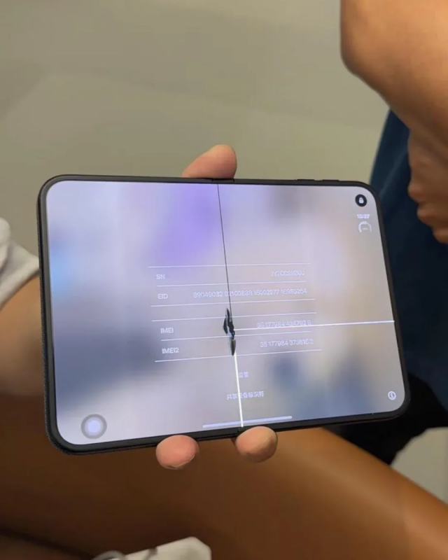

https://9to5mac.com/2026/10/26/apple-responds-to-reports-of-iphone-duos-inner-display-cracking/
다음은 애플의 성명 전문입니다:
“초기 사용자들로부터 아이폰 듀오에 대한 반응은 놀라울 정도로 긍정적이었으며, 개발자들이 이 기기의 독특한 폼 팩터를 활용하기 위해 앱을 빠르게 업데이트하며 흥미로운 결과물을 보여주고 있습니다. 소수의 아이폰 듀오 기기에서 내부 디스플레이에 문제가 발생하는 사실을 파악하고 있습니다. 아이폰 듀오 디스플레이에 문제가 발생한 사용자는 애플케어에 문의하여 교체받으시기 바랍니다.”
(교체 재고 없음)
나라면 일단 지금은 반품한뒤에 개선품 구입한다..